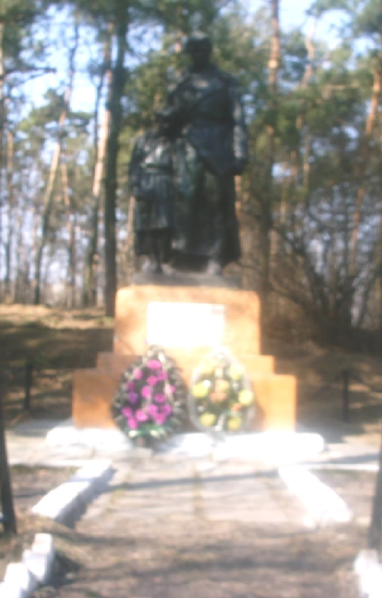
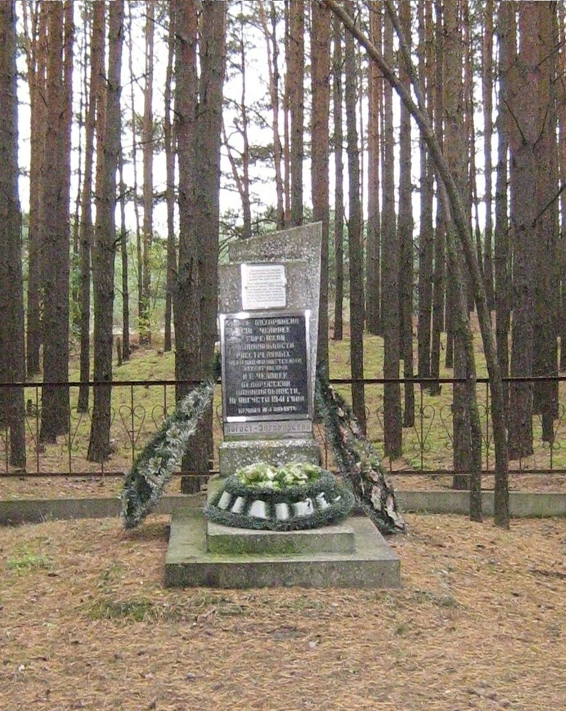

2 Обелиска
В юго-западной части деревни похоронены 600 жителей д.Погост-Загородск
еврейской национальности, расстрелянных фашистами 15.08.1942г. при
ликвидации гетто. Стела установлена бывшим жителем д.Погост-Загородск
Михаилом Южуком. В 1998г. здесь состоялось перезахоронение останков
с ликвидированного еврейского кладбища в д.Камень.

В урочище Малая Долина на восток от деревни похоронены 136 жителей
д.Погост-Загородск (130 человек еврейской и 6 человек белорусской национальности),
расстрелянных немецко-фашистскими захватчиками 10.08.1941г..
Стела установлена в 1990г. бывшим жителем д.Погост-Загородск Михаилом Южуком.
